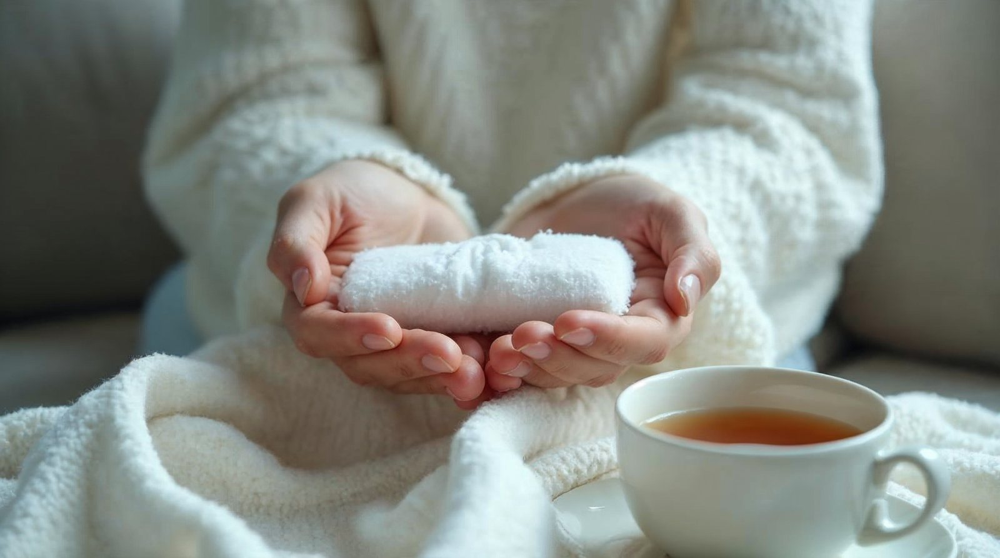
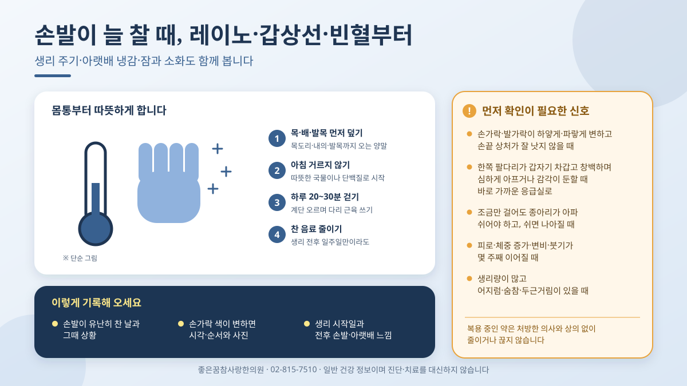

이종호 한의사 감수좋은꿈참사랑한의원 대표원장 (한의사 면허번호 19769)발행 2026-11-26 · 수정 2026-11-26
이 글의 차례
퇴근길 지하철, 장갑을 끼고 있는데도 손끝이 시립니다. 집에 와서 양말을 두 켤레 신고 이불 속에 들어가도 발은 한참 동안 얼음장 같습니다. 옆 사람은 덥다는데 나만 늘 춥습니다.
손발이 찬 수족냉증은 손발만의 문제가 아니라 몸이 열을 어디에 먼저 쓰고 있는지 보여 주는 신호인 경우가 많습니다. 저는 손발과 함께 생리 주기, 아랫배 냉감, 잠과 소화를 여쭙습니다. 다만 손가락 색이 하얗게 또는 파랗게 변하거나, 피로·체중 변화·어지럼이 함께 온다면 레이노 현상, 갑상선, 빈혈을 먼저 확인하셔야 합니다.
진료실에서 이런 말씀을 자주 듣습니다. 원래 손발이 찬 체질이라 어쩔 수 없다고 생각하며 살았다고요. 악수할 때마다 손이 차다는 말을 들어 손을 내밀기가 망설여진다는 분도 계십니다.
차가운 손발은 생각보다 하루를 많이 흔듭니다. 잠드는 데 오래 걸리고, 생리 때는 아랫배까지 시리고, 겨울이면 외출이 줄어듭니다. 늘 그래 왔다는 이유로 혼자 참아 오셨다면, 이제 한 번쯤 차근차근 나누어 보셨으면 합니다.
왜 손발만 유독 차가울까요
우리 몸은 체온을 일정하게 지키려고 피부 가까운 혈관을 넓혔다 좁혔다 합니다. 추울 때 손발 혈관이 좁아지는 것은 열을 덜 잃으려는 정상적인 반응입니다. 그런데 이 반응이 유난히 빠르고 오래가면, 남들보다 쉽게 손발이 차가워집니다.
근육은 몸에서 열을 많이 만드는 곳입니다. 근육량이 적거나, 끼니를 자주 거르거나, 무리하게 체중을 줄인 시기에는 열을 만들 재료가 부족해집니다. 긴장과 스트레스도 혈관을 좁히는 쪽으로 작용해, 마음 쓰이는 일이 많은 주에 손이 더 차다는 분도 많습니다.
오래 앉아 있는 생활도 한몫합니다. 다리 근육이 움직이지 않으면 아래로 내려간 피가 다시 올라오는 힘이 약해져, 오후가 되면 발이 차고 붓기 쉽습니다. 발목을 조이는 양말이나 꽉 끼는 신발, 허리를 조이는 옷도 흐름을 막아 손발을 더 차게 만들 수 있습니다.
잠도 빼놓을 수 없습니다. 잠이 부족하면 몸이 열을 고르게 나누는 리듬이 흐트러져, 밤샘 다음 날 손발이 유난히 차다는 분이 많습니다. 그래서 저는 손발 이야기를 듣다가도 몇 시에 잠드는지를 꼭 여쭙습니다.
여성에게 수족냉증이 많은 이유로는 근육량 차이와 함께 생리 주기에 따른 호르몬 변화가 꼽힙니다. 생리 전후로 손발이 더 차고 아랫배가 시리다는 분이 많은 것도 그래서입니다.
한의학에서는 이런 모습을 몸의 양기가 부족하거나, 기혈이 막혀 끝까지 닿지 못하는 상태로 나누어 봅니다. 같은 차가움이라도 기운이 없어서인지, 흐름이 막혀서인지에 따라 살피는 길이 다릅니다.
비슷해 보이지만 따로 확인할 것들
손발이 차다는 말 안에는 여러 상태가 섞여 있습니다. 저는 아래 세 가지를 먼저 떼어 놓고 봅니다. 이것들은 검사로 확인할 수 있고, 확인되면 그쪽 치료가 먼저이기 때문입니다.
레이노 현상
찬물에 손을 넣거나 찬 공기를 쐬었을 때, 또는 긴장했을 때 손가락이 하얗게 질렸다가 파랗게, 다시 붉게 변하는 경우가 있습니다. 색이 바뀌는 경계가 또렷하고, 저리거나 욱신거리기도 합니다. 이를 레이노 현상이라 부릅니다.
대부분은 다른 병 없이 생기지만, 관절이 붓고 아프거나 피부가 단단해지거나 입이 마르는 증상이 함께 있다면 류마티스내과 진료를 받아 보셔야 합니다. 손끝에 상처가 생겨 잘 낫지 않는다면 더 서둘러 확인하세요.
갑상선 기능 저하
추위를 유난히 타면서 몸이 무겁고 붓고, 체중이 늘고, 변비가 생기고, 피부가 건조해지고, 기운이 없다면 갑상선 기능을 확인해 볼 만합니다. 혈액 검사로 알 수 있으니 내과에서 상담해 보세요. 이미 갑상선 약을 드시고 있다면 처방한 의사와 상의 없이 양을 바꾸지 않습니다.
빈혈
생리량이 많은 분, 끼니가 불규칙한 분에게 철 결핍 빈혈이 흔합니다. 손발이 차면서 쉽게 숨이 차고, 앉았다 일어설 때 어지럽고, 얼굴이 창백하고, 손톱이 잘 부서진다면 혈액 검사를 받아 보세요. 생리량이 많다면 산부인과 진료도 함께 필요합니다.
이 밖에 손발이 시린 것이 아니라 저리고 감각이 둔하다면 신경 쪽을 살펴야 합니다. 그 구분은 손발이 저린 것과 시린 것은 어떻게 다르게 설명하면 될까요?에 따로 정리했습니다.
생리 주기와 아랫배 냉감
손발이 찬 분께 저는 생리 이야기를 꼭 여쭙니다. 주기가 일정한지, 생리 전후로 손발이 더 찬지, 생리 때 아랫배가 차고 묵직한지, 생리혈에 덩어리가 많은지를 봅니다.
아랫배를 손으로 만졌을 때 배꼽 위보다 아래가 더 서늘하다는 분이 많습니다. 찬 음식을 먹으면 배가 아프거나 설사를 하는 분도 있습니다. 이런 모습이 손발 냉감과 함께 있다면, 저는 손발보다 배 속의 온도를 먼저 생각합니다.
생리 전마다 몸살 기운처럼 으슬으슬하고 추웠다 더웠다 한다는 분도 계십니다. 추위와 더위를 둘 다 견디기 어려운 이런 모습은 체온을 조절하는 힘이 흔들리는 신호로 보고 따로 여쭙습니다.
생리 때 아랫배 냉감은 생리 때마다 아랫배가 차고 묵직할 때는 무엇을 먼저 살피나요?에서 더 자세히 보실 수 있습니다.
생리통이 심해 진통제를 자주 드신다면, 손발 냉감과 별개로 산부인과에서 자궁과 난소 상태를 한 번 확인해 두시길 권합니다. 원인이 되는 다른 상태가 없다는 것을 알고 나면, 생활에서 무엇을 바꿀지 훨씬 마음 편히 정할 수 있습니다.
시기에 따라 달라지는 손발 냉감
손발이 차다는 같은 말도 언제 시작되었는지에 따라 살필 곳이 달라집니다. 10대나 20대에 무리하게 체중을 줄인 뒤 시작되었다면 끼니와 근육량, 생리 주기를 먼저 봅니다. 몸이 열을 만들 재료가 모자란 경우가 많기 때문입니다.
출산 뒤에 시작되었다면 잠이 쪼개진 생활과 출혈, 수유로 빠져나간 것들을 함께 봅니다. 40대 후반 이후라면 발은 시린데 얼굴과 가슴은 달아오르는 모습이 함께 오기도 해, 갱년기 변화와 겹치지 않는지 여쭙니다.
담배와 카페인도 혈관을 좁히는 쪽으로 작용합니다. 커피를 마신 뒤 손이 더 차고 가슴이 두근거린다면 하루 잔 수를 적어 보세요. 몸이 카페인에 예민하게 반응하는 것도 하나의 단서가 됩니다.

예를 들면 이런 경우입니다
실제 어느 분의 사연이 아니라, 진료실에서 자주 보는 모습을 바탕으로 그려 본 장면입니다.
예를 들어 하루 종일 냉방이 센 사무실에 앉아 일하고, 점심은 차가운 샐러드나 아이스 음료로 때우는 경우가 있습니다. 여름에도 발이 차고 오후면 아랫배가 묵직합니다. 이럴 때는 손발보다 하루 동안 배를 얼마나 차게 두었는지부터 함께 셉니다.
예를 들어 겨울 아침 찬물로 설거지를 하다 손가락 두세 개가 하얗게 질리고, 따뜻한 물에 담그면 붉어지며 욱신거리는 경우도 있습니다. 색이 변하는 모습을 사진으로 남겨 두시라고 말씀드리고, 내과나 류마티스내과 확인을 먼저 안내합니다.
예를 들어 몇 달 전부터 손발이 차고 계단을 오르면 숨이 차며, 생리량이 예전보다 늘었다는 경우도 있습니다. 이때는 빈혈 검사와 산부인과 진료를 먼저 권하고, 결과를 확인한 뒤 끼니와 잠을 함께 살핍니다.
스스로 점검해 보세요
- 계절과 상관없이 손발이 차서 양말이나 장갑을 자주 찾는다
- 손발과 함께 아랫배도 서늘하고, 생리 전후로 더 심하다
- 찬 것을 먹으면 배가 아프거나 설사를 한다
- 발이 차서 잠드는 데 30분 넘게 걸리는 날이 많다
- 추위와 더위를 둘 다 많이 탄다
- 추위나 긴장에 손가락 색이 하얗게·파랗게 변한 적이 있다
- 쉽게 지치고, 일어설 때 어지럽거나 숨이 찬다
뒤의 두 줄에 해당한다면 검사가 먼저입니다. 나머지는 표시해 오시면 그 줄부터 이야기를 시작하겠습니다.
표시한 줄이 많다고 해서 걱정부터 하실 필요는 없습니다. 오히려 어디서부터 손을 대면 좋을지 알려 주는 지도라고 생각해 주세요.
먼저 이렇게 여쭙니다
- 손과 발 가운데 어디가 더 찬가요? 손가락 색이 변한 적이 있나요?
- 계절과 상관없이 늘 찬가요, 겨울이나 긴장할 때만 그런가요?
- 생리 주기는 일정한가요? 생리 전후로 손발과 아랫배가 더 찬가요?
- 찬 것을 먹으면 배가 아프거나 설사를 하나요? 대변은 며칠에 한 번인가요?
- 발이 차서 잠들기 어렵거나, 밤에 깨는 일이 있나요?
- 최근 체중이 빠르게 늘거나 줄었나요? 피로나 어지럼은 어떤가요?
받으신 건강검진 결과나 혈액 검사 결과가 있다면 가져와 주세요. 갑상선 수치나 혈색소 수치를 함께 보면 이야기가 훨씬 빨라집니다.
일상에서 먼저 해 볼 수 있는 것
몸을 데우는 일은 손발보다 몸통에서 시작하는 편이 좋습니다. 손발만 뜨겁게 해도 몸통이 차면 금방 다시 식기 때문입니다.
- 목과 배, 발목 세 곳을 먼저 덮기(얇은 목도리, 배를 덮는 내의, 발목까지 오는 양말)
- 아침을 거르지 않고, 따뜻한 국물이나 단백질이 있는 음식으로 시작하기
- 하루 20~30분 걷거나 계단을 오르며 다리 근육을 쓰기
- 오래 앉아 있을 때 한 시간에 한 번 일어나 발끝 들기와 까치발 열 번
- 잠들기 30분 전 미지근한 물에 발을 10분쯤 담그기(너무 뜨거운 물은 피하기)
- 찬 음료와 아이스 음식은 생리 전후 일주일만이라도 줄여 보기
핫팩이나 전기장판을 쓸 때는 피부에 직접 오래 대지 마세요. 손발 감각이 둔한 분은 저온 화상을 입기 쉽습니다.
당뇨가 있거나 손발 감각이 무딘 분, 발에 상처가 있는 분은 족욕과 핫팩을 특히 조심하셔야 합니다. 뜨거운 줄 모르고 오래 두었다가 물집이 잡혀도 늦게 알아차리기 쉽기 때문입니다.
물 온도는 발 대신 팔꿈치 안쪽이나 온도계로 먼저 확인하고, 발에 상처가 있다면 족욕은 담당 의사와 먼저 상의해 주세요. 발이 차서 잠이 어렵다면 발이 차서 잠이 잘 오지 않을 때는 어떻게 하나요?도 참고해 보세요.
진료실에서 손을 잡아 보면
맥을 짚으려고 손목을 잡으면 손의 온도와 촉감이 먼저 전해집니다. 차면서 손바닥이 촉촉하게 젖어 있는 손이 있고, 차면서 바싹 마른 손이 있습니다. 한의학에서는 앞의 경우를 긴장과, 뒤의 경우를 기운이나 혈이 모자란 모습과 연결해 살펴보기도 합니다. 물론 손 하나로 정하지 않고 맥과 생활 이야기를 함께 놓고 봅니다.
손톱 색이 창백한지, 손끝을 눌렀다 뗐을 때 색이 얼마나 빨리 돌아오는지도 봅니다. 손등과 손바닥, 발등과 발바닥의 온도가 서로 다른 것도 단서가 됩니다. 이런 작은 차이를 모아 맥과 함께 놓고 보면 같은 냉증이라도 살필 방향이 조금씩 갈립니다.
한의원에서 함께 살필 수 있는 경우
- 검사에서 갑상선·빈혈 등 큰 이상은 없다고 들었지만 손발이 계속 찬 경우
- 손발 냉감과 함께 생리 때 아랫배가 차고 묵직하거나 생리통이 있는 경우
- 찬 것을 먹으면 탈이 나고 소화와 대변 리듬이 흔들리는 경우
- 손발은 찬데 얼굴은 달아오르거나, 추위와 더위를 함께 타는 경우
좋은꿈참사랑한의원에 처음 오시면 손발이 언제, 어떻게 차가운지부터 듣고 레이노 현상이나 검사가 먼저 필요한 신호가 없는지 확인합니다. 그다음 양손을 올려 주시면 맥을 짚으며 잠과 소화, 대변, 생리 이야기를 여쭙고, 필요하다고 판단될 때 혀도 봅니다.
이어서 손발과 아랫배의 온도를 손으로 비교해 보고, 정강이를 눌러 붓기를 봅니다. 이렇게 살핀 내용을 바탕으로 침, 뜸, 한약 상담 가운데 지금 몸에 맞는 방법을 함께 정합니다. 당뇨가 있거나 피부 감각이 둔하다면 뜸을 정하기 전에 꼭 말씀해 주세요. 치료 중에는 따뜻하고 편안한지 여쭙고, 불편하면 바로 멈춥니다.
다시 오시면 지난번 이후 생리 때 아랫배가 어땠는지, 발이 차서 잠을 설친 밤이 며칠이었는지부터 이어서 여쭙습니다.
손발 냉감은 계절을 타기 때문에, 한 철만 보고 판단하기보다 겨울과 여름을 한 번씩 지나 보며 몸이 어떻게 달라지는지 함께 지켜보는 편이 좋습니다.
이렇게 기록해 오시면 상담이 쉬워집니다
손발 냉감은 날씨와 기분, 생리 주기에 따라 오르내립니다. 2~4주만 아래를 적어 보세요. 생리 한 번을 끼고 적으면 더 좋습니다.
- 손발이 유난히 찼던 날과 그때 상황(날씨, 실내 온도, 긴장했던 일)
- 손가락 색이 변했다면 그 시각과 색 변화 순서, 가능하면 사진
- 생리 시작일과 끝난 날, 생리 전후 손발과 아랫배 느낌
- 찬 것을 먹은 날과 그날 대변 상태
- 잠들기까지 걸린 시간과 밤에 깬 횟수
색이 변하는 모습은 진료실에서는 보기 어렵습니다. 사진 한 장이 긴 설명보다 많은 것을 알려 줍니다.
집에서 손발 온도를 잴 필요는 없습니다. 손으로 만졌을 때 얼음장 같은지, 서늘한지, 미지근한지 세 가지 가운데 하나로만 적어도 충분합니다. 같은 사람이 같은 방식으로 적으면 몇 주 뒤에 흐름이 보입니다.
이런 증상은 먼저 확인이 필요합니다
- 손가락이나 발가락이 하얗게 또는 파랗게 변하고, 손끝에 상처가 생겨 잘 낫지 않는 경우
- 한쪽 팔이나 다리가 갑자기 차갑고 창백해지면서 심하게 아프거나 감각이 둔해지는 경우
이런 신호가 있으면 한의원보다 가까운 병원이나 응급실을 먼저 찾으세요.
차가운 손발로 지내 온 시간이 길수록, 원래 그런 몸이라고 여기기 쉽습니다. 하지만 몸은 날마다 조금씩 다른 이야기를 합니다. 그 이야기를 함께 들어 보겠습니다. 다음에 오시면 지난 생리 전후로 손발과 아랫배가 어땠는지부터 여쭙겠습니다.

여쭙는 것
- 손과 발 가운데 어디가 더 찬가요? 손가락 색이 변한 적이 있나요?
- 계절과 상관없이 늘 찬가요, 겨울이나 긴장할 때만 그런가요?
- 생리 주기는 일정한가요? 생리 전후로 손발과 아랫배가 더 찬가요?
생활에서 해 볼 것
- 목과 배, 발목 세 곳을 먼저 덮기(얇은 목도리, 배를 덮는 내의, 발목까지 오는…
- 아침을 거르지 않고, 따뜻한 국물이나 단백질이 있는 음식으로 시작하기
- 하루 20~30분 걷거나 계단을 오르며 다리 근육을 쓰기
한의원에서 함께 살필 것
- 검사에서 갑상선·빈혈 등 큰 이상은 없다고 들었지만 손발이 계속 찬 경우
- 손발 냉감과 함께 생리 때 아랫배가 차고 묵직하거나 생리통이 있는 경우
- 찬 것을 먹으면 탈이 나고 소화와 대변 리듬이 흔들리는 경우
먼저 확인이 필요한 신호
- 손가락이나 발가락이 하얗게 또는 파랗게 변하고, 손끝에 상처가 생겨 잘 낫지 않는 경우
- 한쪽 팔이나 다리가 갑자기 차갑고 창백해지면서 심하게 아프거나 감각이 둔해지는 경우
한눈에 보는 표
| 구분 | 핵심 |
|---|---|
| 여쭙는 것 | 손과 발 가운데 어디가 더 찬가요? 손가락 색이 변한 적이 있나요? 계절과 상관없이 늘 찬가요, 겨울이나 긴장할 때만 그런가요? |
| 생활에서 해 볼 것 | 목과 배, 발목 세 곳을 먼저 덮기(얇은 목도리, 배를 덮는 내의, 발목까지 오는 양말) 아침을 거르지 않고, 따뜻한 국물이나 단백질이 있는 음식으로 시작하기 |
| 한의원에서 함께 살필 것 | 검사에서 갑상선·빈혈 등 큰 이상은 없다고 들었지만 손발이 계속 찬 경우 손발 냉감과 함께 생리 때 아랫배가 차고 묵직하거나 생리통이 있는 경우 |
| 먼저 확인이 필요한 신호 | 손가락이나 발가락이 하얗게 또는 파랗게 변하고, 손끝에 상처가 생겨 잘 낫지 않는 경우 한쪽 팔이나 다리가 갑자기 차갑고 창백해지면서 심하게 아프거나 감각이 둔해지는 경우 |
자주 묻는 질문
손발이 찬 것도 병인가요?
손발이 찬 것만으로 병이라고 하지는 않습니다. 다만 색이 변하거나 피로·체중 변화·어지럼이 함께 있다면 레이노 현상, 갑상선, 빈혈 등을 확인해야 하고, 검사에 이상이 없어도 생활이 불편하다면 상담해 볼 수 있습니다.
레이노 현상은 어떻게 알 수 있나요?
추위나 긴장에 손가락이 하얗게, 파랗게, 붉게 차례로 변하고 경계가 또렷한 것이 특징입니다. 색이 변할 때 사진을 찍어 두고 내과나 류마티스내과에서 상담해 보세요.
생리 때마다 손발과 아랫배가 더 차요. 관계가 있나요?
생리 주기에 따라 체온 조절이 달라져 그렇게 느끼는 분이 많습니다. 생리 시작일과 그 전후 손발·아랫배 느낌을 함께 적어 오시면 살피기 쉽습니다.
손발이 차면 뜨거운 곳에 오래 두면 되나요?
손발만 데우면 금방 다시 식기 쉽습니다. 목과 배, 발목을 먼저 덮고 다리 근육을 쓰는 편이 도움이 되고, 핫팩은 저온 화상을 조심하세요.
좋은꿈참사랑한의원은 재진 때 지난번 이야기부터 이어서 여쭙니다. 진료시간과 예약은 오시는 길에서 확인하세요.
어디서 상담받을 수 있나요?
좋은꿈참사랑한의원은 서울 동작구 만양로2길 2 신성빌딩 3층·5층(서울 동작구 상도동, 7호선 상도역 3번 출구 근처)에 있습니다. 한의사 3명(이종호 대표원장, 조영기 수석진료원장, 정원영 진료원장)이 진료합니다. 진료시간은 평일 09:30~20:00(점심 13:00~14:00), 토·일·공휴일 09:30~15:00이며, 방문 전 전화로 확인을 권합니다. 예약은 네이버 예약, 카카오톡 상담, 전화 02-815-7510로 받습니다.
이 글은 일반적인 건강 정보이며 개인의 진단이나 치료를 대신하지 않습니다. 증상이 있거나 복용 중인 약이 있다면 진료를 통해 확인하세요. 치료 효과는 개인마다 다를 수 있습니다.
작성 기준: 일반적으로 알려져 있는 건강 정보를 참고해 정리했습니다(대표원장 감수). 증상 기록은 1~2주 동안 하루 1회, 비슷한 시간에 적어 오시면 지난 상태와 비교하기 쉽습니다.